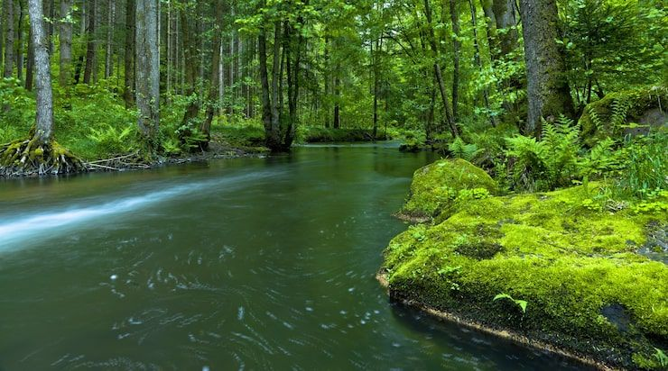
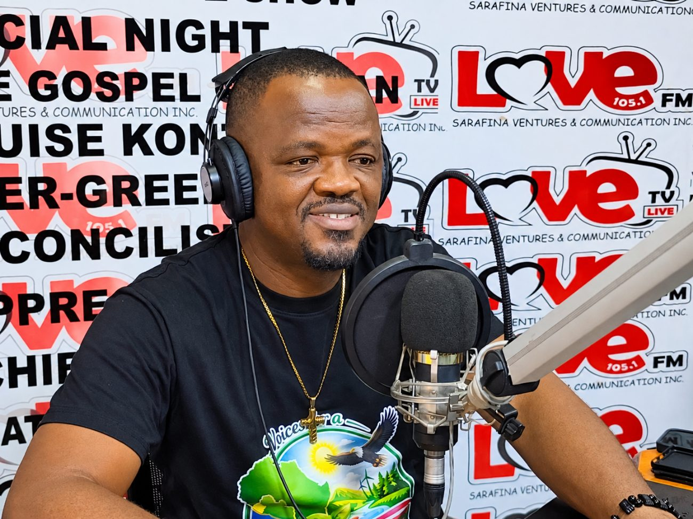
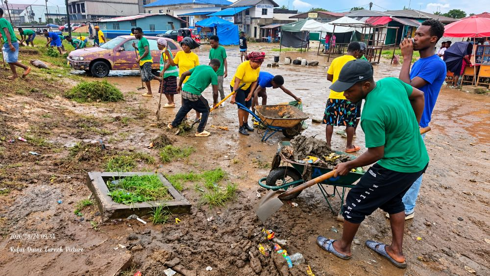
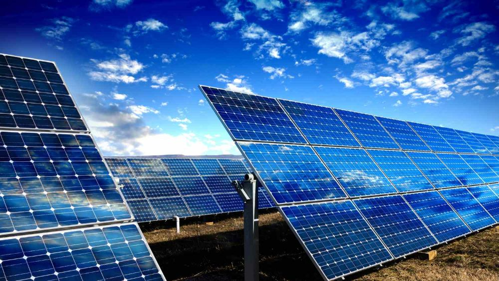
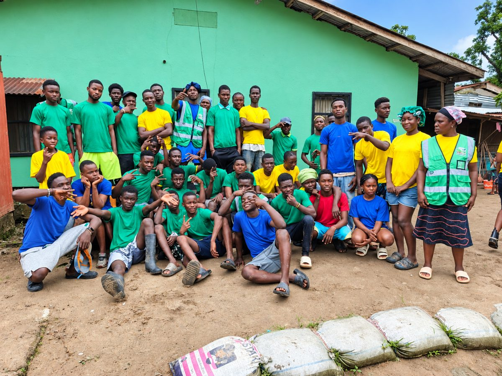

Keeping the green in our future.
Open a conversation about the forests, waterways, and natural spaces around us.
Educating, engaging, and empowering communities for a greener Liberia through environmental journalism, public education, and practical community action.

For the land we love.
For the generations to come.
Start with an issue you care about. These introductory guides offer ideas for learning, sharing, and taking action.

Open a conversation about the forests, waterways, and natural spaces around us.

Turn care for your surroundings into a conversation with your community.

Ask better questions about the energy choices that shape everyday life.
The Community photograph shows a VGL clean-up. The Nature and Clean energy photographs are illustrative and do not document VGL activities.

Voices for a Green Liberia (VGL) Media Inc. is an environmental media and advocacy organization that uses journalism, broadcasting, digital communication, public education, and community engagement to promote environmental protection and sustainable development in Liberia.
Environmental protection requires informed citizens, responsible businesses, empowered communities, young people, civil society organizations, and strong institutional partnerships.
To educate, engage, and empower Liberians through credible environmental journalism, public education, advocacy, community outreach, and practical environmental action.
To become Liberia’s leading environmental media and public-engagement platform, inspiring citizens and institutions to protect the environment and build sustainable, healthy, and resilient communities.
Six connected areas bring environmental issues into public conversation and encourage responsible action.
A dedicated environmental radio program designed to bring environmental issues into public conversation.
Environmental experts, government institutions, community leaders, youth and environmental activists, businesses, civil society organizations, and members of the public.
Awareness is the beginning; action, documentation and accountability follow. Each of those lives on its own page.
Explore selected video posts from our Facebook page, from environmental discussions to everyday action.
A discussion framed around waste responsibility and flooding in Monrovia.
Watch on Facebook ↗A VGL awareness message encouraging reusable bags and responsible waste disposal.
Watch on Facebook ↗A message addressing street pollution from household and business waste.
Watch on Facebook ↗Videos open on Facebook. Playback depends on Facebook availability and may require you to log in.
Our newest videos are drawn live from the channel in the newsroom.
Go to the newsroomPrepare a story idea, an expression of interest, or a partnership introduction to share with VGL Media.
Prepare an introduction below, then open it in your email app or copy it to share. You can also contact our team directly. Nothing is submitted automatically.
For story ideas, program enquiries, volunteering, and partnerships, contact our Founder and Executive Director.
Founder & Executive Director, Voices for a Green Liberia (VGL) Media Inc. Story ideas, programme enquiries, volunteering and partnerships all reach the same desk.
Contact VGL MediaEvery thoughtful conversation is a place to begin.
Stay connected.
Keep the conversation growing.
Find Voices for a Green Liberia on Facebook and YouTube. Follow our page and visit our channel.
Join us on Facebook.
Posts, photographs and community conversation.
Watch VGL Media.
Discussions, interviews and awareness films.
Read our page, here.
Our Facebook posts, photographs and videos as they are published. Nothing is requested from Facebook until you load it.
Or open the page on Facebook ↗